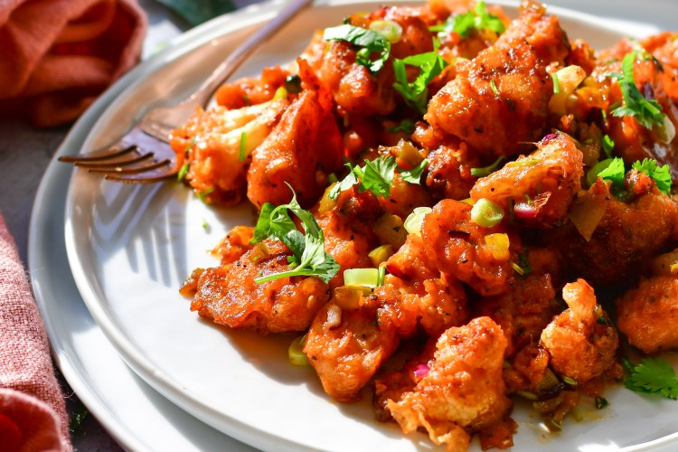

Gobi manchurian is a favorite for vegetarians in India!
Gobi Manchurian is an Indochinese food, which is a mix of Indian and Chinese cooking. It is cauliflower sauteed in a delcious, tangy sweet and spicy sauce. It is a favorite for many and never disappoints!
Price: $4.99
Created by: Arpun K. Updated 9/21/2020